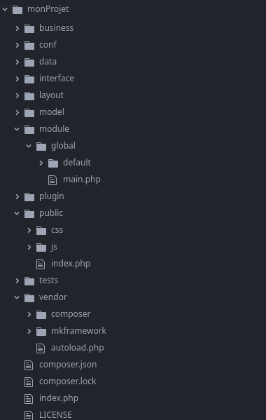

Télécharger le framework
Il y a désormais 3 dépots différents
- la librairie du framework seule
- le builder (générateur web) seul
- le package contenant l'ensemble pour démarrer
Le package contenant l'ensemble pour démarrer
php >= 7.203/04/2021: Télécharger la dernière version (v2.1.0 LGPLv3)
11/01/2021: Télécharger la précédente version (v2.0.2 LGPLv3)
01/01/2021: Télécharger la précédente version (v2.0.0 LGPLv3)
php >= 5.2 < php 7.2
03/04/2021: Télécharger la dernière version (v1.8.0 LGPLv3)
07/01/2021: Télécharger la précédente version (v1.7.1 LGPLv3)
08/04/2020: Télécharger la précédente version (v1.6.0 LGPLv3)
01/04/2020: Télécharger la précédente version (v1.5.0 LGPLv3)
16/01/2020: Télécharger la précédente version (v1.4.0 LGPLv3)
20/12/2019: Télécharger la précédente version (v1.3.0 LGPLv3)
28/09/2019: Télécharger la précédente version (v1.2.1 LGPLv3)
17/02/2019: Télécharger la précédente version (v1.2.0 LGPLv3)
La librairie du framework seule
php >= 7.203/04/2021: Télécharger la dernière version (v5.1.0 LGPLv3)
19/03/2021: Télécharger la précédente version (v5.0.3 LGPLv3)
17/02/2021: Télécharger la précédente version (v5.0.1 LGPLv3)
01/01/2021: Télécharger la précédente version (v5.0.0 LGPLv3)
php >= 5.2 < php 7.2
03/04/2020: Télécharger la dernière version (v4.138.0 LGPLv3)
01/04/2020: Télécharger la précédente version (v4.136.0 LGPLv3)
16/01/2020: Télécharger la précédente version (v4.135.0 LGPLv3)
20/12/2019: Télécharger la précédente version (v4.134.0 LGPLv3)
18/08/2018: Télécharger la précédente version (v4.133.0 LGPLv3)
13/08/2018: Télécharger la précédente version (v4.132.0 LGPLv3)
22/04/2018: Télécharger la précédente version (v4.131.1 LGPLv3)
Le builder seul
php >= 7.211/01/2021: Télécharger la dernière version (v3.0.2 LGPLv3)
01/01/2021: Télécharger la précédente version (v3.0.0 LGPLv3)
php >= 5.2 < php 7.2
07/01/2021: Télécharger la dernière version (v2.5.2 LGPLv3)
08/04/2020: Télécharger la précédente version (v2.5.0 LGPLv3)
16/01/2020: Télécharger la précédente version (v2.4.0 LGPLv3)
20/12/2019: Télécharger la précédente version (v2.3.0 LGPLv3)
28/09/2019: Télécharger la précédente version (v2.2.1 LGPLv3)
17/02/2019: Télécharger la précédente version (v2.2.0 LGPLv3)
29/10/2018: Télécharger la précédente version (v2.1.5 LGPLv3)
Explication du numéro de version v4.XXX.YY:
XXX : s'incrémente à chaque nouvelles fonctionnalités
YY : s'incrémente à chaque bugfix (lié au numéro de version XX)
Pour information, les changelogs sont disponibles ici:
- La librarie du framework https://github.com/imikado/mkframeworkLib/releases
- Le Builder https://github.com/imikado/mkframeworkBuilder/releases
- Le package contenant l'ensemble https://github.com/imikado/mkframeworkPackage/releases
Les dépôts github
Le Package
L'adresse https://github.com/imikado/mkframeworkPackage
git clone https://github.com/imikado/mkframeworkPackage
Le Builder (générateur web) seul
L'adresse https://github.com/imikado/mkframeworkBuilder
git clone https://github.com/imikado/mkframeworkBuilder
Le framework seul
L'adresse https://github.com/imikado/mkframeworkLib
git clone https://github.com/imikado/mkframeworkLib
Vous pouvez également installer via composer:
Composer est un projet qui vous permet de gérer les dépendances de vos projets: vous pouvez créer un fichier pour indiquer quels bibliothèques,frameworks sont nécessaires ainsi que leur numéro de version.Ajouter le framework à votre projet
Créez un fichier composer.json à la racine de votre projet avec le contenu suivant:
php >= 7.2
{
"require":{
"mkframework/mkframework-lib":"5.1.0"
}
}
{
"require":{
"mkframework/mkframework-lib":"4.138.0"
}
}
Puis lancez la commande d'installation des dépendances:
composer install
Créer un projet avec Composer
Composer est un projet qui vous permet de gérer les dépendances de vos projets: vous pouvez créer un fichier pour indiquer quels bibliothèques,frameworks sont nécessaires ainsi que leur numéro de version.
composer create-project mkframework/skeleton-sc-bootstrap monProjet

Plus d'informations sur composer ici